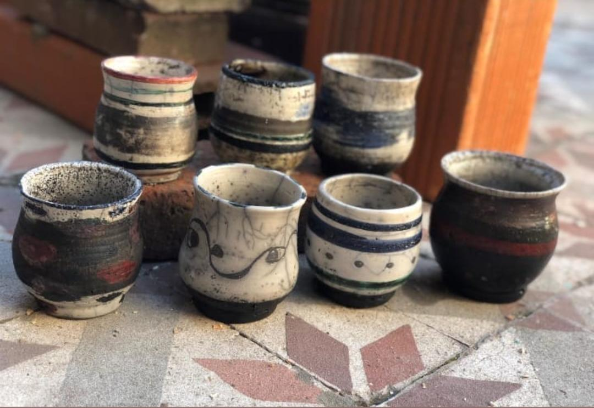

TECNICAS
Existen dentro del mundo de la arcilla y la cerámica diferentes técnicas y procedimientos que se pueden aplicar para lograr diferentes efectos y diferentes texturas... Existen muchisimas!! A continuación te muestro algunas de ellas.. las que mas estoy utilizando en estos últimos tiempos...

TECNICA DE ROLLITO COCIDO
Es una de las tecnicas a modelar en el torno dandole origen a las piezas

Pintura a las piezas
Pincelado a mano de las piezas, dandole identidad

Tecnica de Raku
Esta es una tecnica sobre humo, efectuado con horno especial para Raku

Horno Raku
Horno especial dedicado para la tecnica Raku